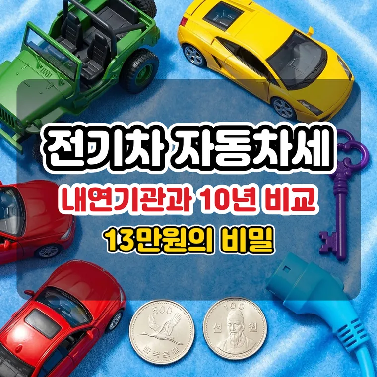

전기차 자동차세 13만원의 비밀: 2,000cc 내연기관 자동차세와 10년 유지비 실제 비교
전기차 자동차세는 연 13만 원, 2,000cc 신차는 연 52만 원입니다. 내연기관은 해마다 세금이 줄어들기 때문에 10년 동안 쌓이는 차이는 390만 원이 아니라 약 296만 원입니다.

자동차를 사거나 유지비를 따져 볼 때 매년 두 번 내는 자동차세는 꼭 확인하게 됩니다. 전기차는 내연기관과 세금을 매기는 방식이 달라 부담이 적은 편입니다.
전기차와 2,000cc 내연기관의 자동차세를 차령 경감까지 반영해서 비교했습니다.
전기차는 정액 10만 원에 교육세 3만 원입니다
내연기관 자동차세는 엔진 배기량(cc)을 기준으로 매깁니다. 전기차는 배기량이 없어서 지방세법상 ‘그 밖의 승용자동차’로 분류되어 정액으로 과세합니다.
비영업용 전기 승용차의 기본 자동차세는 연 10만 원이고, 여기에 지방교육세 30%인 3만 원이 더해집니다. 전기차 소유자가 매년 내는 금액은 합쳐서 13만 원입니다.
10만 원 + 지방교육세 3만 원(10만 원 × 30%) = 연 13만 원
2,000cc 신차는 연 52만 원, 첫해 차이는 39만 원
비영업용 승용차는 2,000cc의 경우 cc당 200원을 곱합니다. 기본 자동차세가 40만 원(2,000cc × 200원)이고, 지방교육세 12만 원이 더해져 연 52만 원입니다.
| 구분 | 전기차 | 2,000cc 신차 |
|---|---|---|
| 기본 자동차세 | 10만 원 | 40만 원 |
| 지방교육세 30% | 3만 원 | 12만 원 |
| 연 합계 | 13만 원 | 52만 원 |
신차 등록 첫해 기준으로 두 차의 차이는 연 39만 원입니다.
내연기관은 차령 3년째부터 매년 5%씩 줄어듭니다
내연기관 승용차는 최초 등록 후 3년째부터 매년 5%씩 자동차세가 줄고, 12년째에 50%에서 멈춥니다. 차가 오래될수록 전기차와의 차이도 좁아집니다.
| 차령 | 2,000cc 연세액 | 전기차와 차이 |
|---|---|---|
| 1~2년째 (경감 없음) | 52만 원 | 39만 원 |
| 3년째 (5% 경감) | 49만 4천 원 | 36만 4천 원 |
| 5년째 (15% 경감) | 44만 2천 원 | 31만 2천 원 |
| 7년째 (25% 경감) | 39만 원 | 26만 원 |
| 10년째 (40% 경감) | 31만 2천 원 | 18만 2천 원 |
| 12년째 이상 (50% 경감) | 26만 원 | 13만 원 |
10년 동안 쌓이는 차이는 약 296만 원입니다
전기차는 차령 경감 없이 매년 13만 원이므로 10년 동안 130만 원을 냅니다. 2,000cc 신차를 10년 타면 차령 경감을 순서대로 적용해 약 426만 4천 원입니다.
| 10년 합계 | 금액 |
|---|---|
| 전기차 (13만 원 × 10년) | 130만 원 |
| 2,000cc 내연기관 (차령 경감 반영) | 약 426만 4천 원 |
| 차이 | 약 296만 4천 원 |
인터넷의 “10년 390만 원”은 경감을 뺀 수치입니다
검색하면 10년에 390만 원 차이가 난다는 수치가 자주 보입니다. 39만 원에 10년을 곱한 값으로, 내연기관의 차령 경감을 반영하지 않고 계산한 수치입니다.
차령 경감을 넣으면 차이는 약 296만 원으로 줄어듭니다. 12년이 넘어도 2,000cc는 연 26만 원이라 전기차 13만 원의 두 배입니다.
내 차로 직접 비교하는 방법
자동차세 계산기에서 ‘일반 자동차’에 내 차의 배기량과 최초 등록연도를 넣고, ‘전기·수소차’를 선택해 올해 금액을 비교해 보세요. 두 금액의 차이가 올해 기준 연 세금 차이입니다.
세법은 바뀔 수 있습니다. 자동차 구입에는 취득세나 지자체별 보조금도 따로 확인해야 합니다.
자동차세는 지방세입니다. 세율과 감면 조건은 바뀔 수 있으니 구체적인 내용은 위택스나 관할 지자체에서 확인하세요.
자주 묻는 질문
아니요, 전기 승용차는 배기량이 아닌 정액 세율(비영업용 기준 기본 10만 원 + 지방교육세 3만 원)이 적용되므로 차령 경감이 없고 매년 13만 원으로 같습니다.
최초 등록 후 3년 차부터 매년 5%씩 줄어들어 12년 차가 되면 최대 할인율인 50%에 도달합니다. 2,000cc 기준으로 첫해 52만 원이던 세금이 12년 차 이후에는 연 26만 원이 됩니다.
같습니다. 전기차 13만 원도 6월(1기분)과 12월(2기분)에 6만 5천 원씩 나눠 냅니다. 1월에 연납을 신청하면 2026년 기준 124,042원이 되어 5,958원을 아낄 수 있습니다. 연납 공제율은 해마다 달라질 수 있으니 위택스에서 확인하세요.
아니요. 하이브리드는 엔진이 있어 일반 내연기관처럼 배기량을 기준으로 자동차세를 냅니다. 정액 과세는 배기량이 없는 전기·수소차에 적용됩니다. 자동차세 계산기에서는 하이브리드를 '일반 자동차'에 넣으면 됩니다.